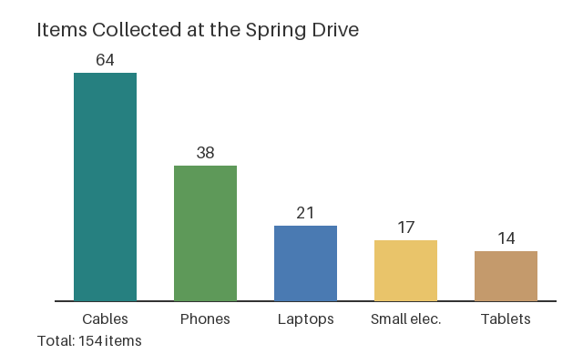

Why It Matters
Electronics contain metals worth recovering and materials that do not belong in a landfill. One recycled laptop keeps lead, mercury, and cadmium out of the ground and puts copper, aluminum, and even gold back into use.


Prepare Your Device: Three Steps
Complete these steps in order before you drop anything off.
- Back up anything you want to keep, such as photos, documents, and saved game data.
- Sign out of every account on the device, then perform a factory reset so none of your personal data travels with it.
- Remove any SIM card or memory card. The club recycles the device, not your accounts or your cards.
What the Club Accepts
Bring any item on this list to a collection event.
- Phones and tablets
- Computers and accessories
- Laptops
- Desktop towers
- Keyboards and mice
- Cables and chargers
- Small electronics such as cameras and handheld games
Learn More
The club vetted its sources before publishing this guide. These two earned the club's trust.